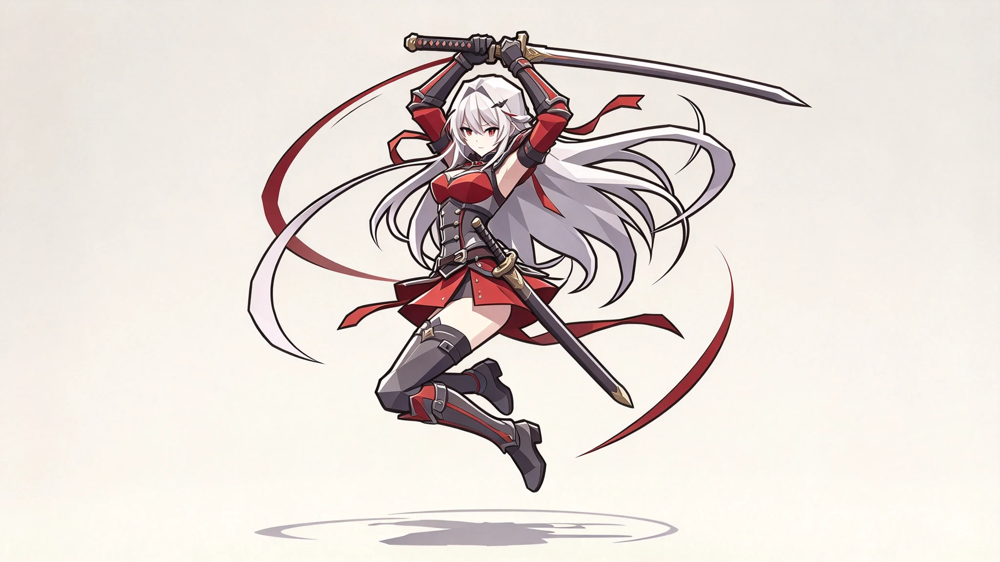

左侧轮盘移动，右侧攻击与技能；站定点击拾取，移动会中断搜寻。
只有8分钟。找到地图上的蓝色法阵，靠近后按住撤离3秒，才能把战利品带回营地。死亡或超时会遗失本局物品。
其余三角有遗迹猎手，搜索完成或3分钟后会依次追踪你。Boss攻击前有3秒预警。
破阵之刃
以夸张横扫击破前路，在危险靠近前带走战利品。
这里是已安全带回的物品。选择角色出战装备与最多5件携带物，出发时会从营地移入本局。
开启后拖动轮盘或技能按钮调整位置。
确认退出？本局战利品、穿戴装备和携带物都会遗失。
成功撤离后，战利品才会进入仓库。
先查看内容，再选择拾取；背包放不下的物品会留在原地。